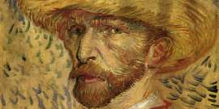

Resulta prácticamente imposible no reconocer la obra de un artista impresionista del siglo XIX. Los paisajes de Monet, el amarillo característico de Van Gogh o las bailarinas de Degas son imágenes universalmente conocidas. Sin embargo, además de compartir la técnica y en algunos casos la temática, estos artistas también tenían otro punto en común: sus problemas de visión.
Los tres sufrieron algún tipo de patología ocular durante su vida, algo que afectó directamente a sus obras, bien en los colores, en las perspectivas o en algún elemento que repetían constantemente en sus cuadros. Los propios oftalmólogos han explicado cómo las llevaban a la pintura
